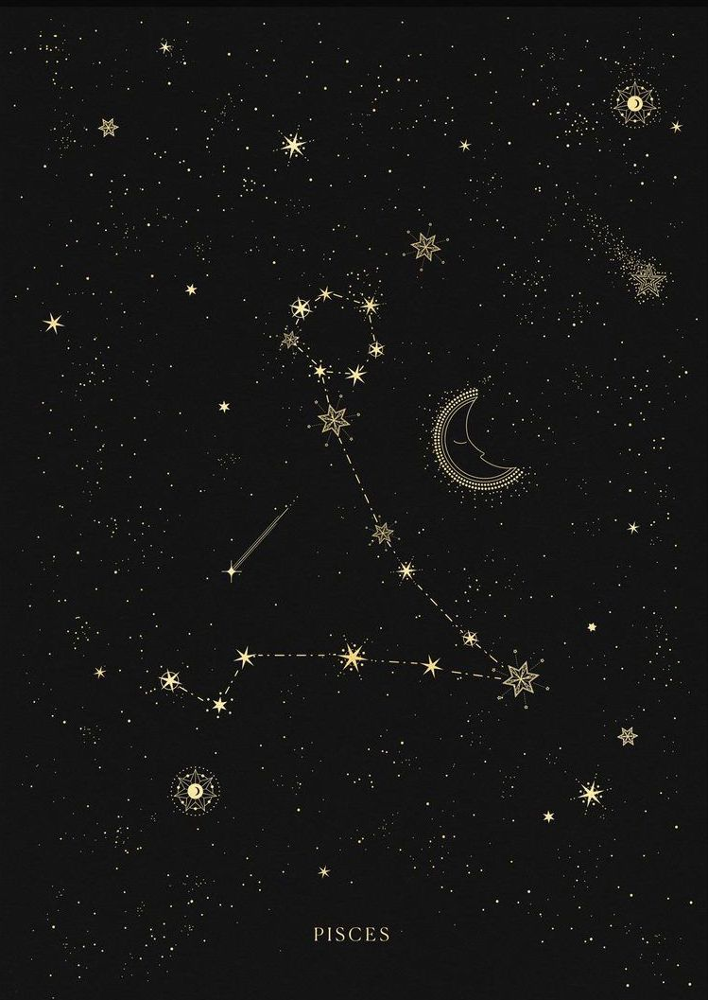

your sun is in...
pisces

"The Fish"

Characteristics of Pisces:
* compassionate
* creative
* intuitive
* empathetic
* sensitive
* generous
* compassionate
* creative
* intuitive
* empathetic
* sensitive
* generous
Sun Signs
Just as the sun is the center point of our solar system, the sun signs represent the center aspects of a person. Your sun sign is one of twelve zodiacs that is based on the position of the Earth in relation to the sun on the day you were born. Because the sun has the strongest pull on the earth, sun signs influence people the most. Therefore, your sun sign can tell you the core characteristics of who you are and how you express yourself to the world.

Element - Water
Each sign is represented by one of four elements: Fire, Earth, Air, or Water. The elements represent a ruling quality that the three signs within this element all share.
Pisces Celebrities

Rihanna
Born: February 20th, 1988
Bon Jovi
Born: March 2, 1962
Steph Curry
Born: March 14th, 1988
Justin Bieber
Born: March 1st, 1994
Queen Latifah
Born: March 18th, 1970
Ruling Planet:

Neptune rules dreams, imagination, and the unconscious
The ruling planet of a sign determines many of its associated character traits. Neptune is greatly ruled by dreams, making pisces highly creative and in tune with their imagination. However, it can also heighten delusions, making pisces more susceptable to unrealistic ideals.
The Sign's Quality:
A sign's quality correlates strongly to their relation to the seasons. The mutable signs all mark the end, or changing, of the seasons. Pisces' position on the zodiac translates the end of winter as a representation of changing from darkness to light. Because of this, pisces is known as a hopeful, trusting, and overall positive sign. But, because they are the mutable water sign, pisces are ultra-sensitive to changes, often giving them false representations of being overly emotional and gloomy.
Mutable
pisces are falsely stereotyped as
overly emotional
when in reality they are introspective and caring
listen to your daily horoscope on spotify: